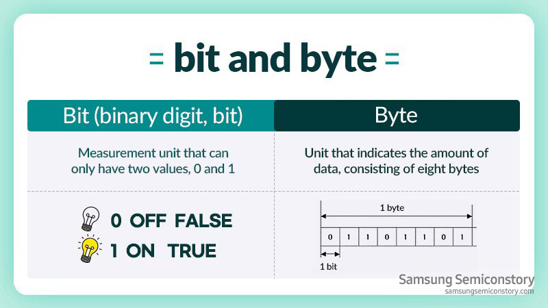

binair stelsel
Wat is het binair stelsel?
Het binair stelsel wordt gebruikt in de digitale electronica en informatica.
Het binair stelsel bestaat maar uit twee cijders.
Deze cijfers zijn namelijk 1 en 0. 1 en 0 worden bit genoemd. Dit is anders dan het decimale stelsel.
Het decimaal stelsel is het
stelsel die wij dagelijks gebruiken. Namelijk 0 tot en met 9. Het binair stelsel
werkt hetzelfde als decimaal stelsel.
In het binaire stelsel worden getallen opgebouwd door combinaties van
0 en 1, net zoals we in het decimale stelsel
getallen opbouwen door combinaties van 0 tot 9. Het verschil zit
hem in de basis: in het decimale stelsel is de basis 10,
terwijl in het binaire stelsel de basis 2 is.

Hier zijn een paar voorbeelden van binaire getallen en de getallen in decimale:
-1010 (binair) = 10 (decimaal)
-1101 (binair) = 13 (decimaal)
-11100 (binair) = 28 (decimaal)
hieronder zie je een ASCII-tabel:

Bit (Binary Digit):
Een bit is de kleinste eenheid van digitale infomatie. Het kan slechts twee waarden aannemen.
Nemelijk 0 of 1, wat overeenkomt met uitgeschakeld (0) en ingeschakeld (1).
Bits worden vaak gebruikt om
betrouwbare informatie weer te geven,
zoals de aan-uitstatus van een schakelaar.

Byte:
Een byte is een grotere eenheid van digitale informatie die is samengesteld uit een reeks van 8 bits.
Een byte kan in totaal
256 verschillende waarden aannemen. Byte geven ons de mogelijkheid om meer
ingewikkelde informatie uit te drukken.
Ze zijn de basisbouwstenen van digitale informatie en worden
gebruikt om gegevens te representreren en te verwerken
in de digitale wereld. Ze zijn handig voor
het opslaan, verwerken en overdragen van
allerlei soorten gegevens van tekst en afbeelddingen.
Hieronder ziet u een embedded link naar Binary Bonanza. Op deze site kunt u zelf nog even kijken hoe het
binair
stelsel werkt. Door het spel te spelen.